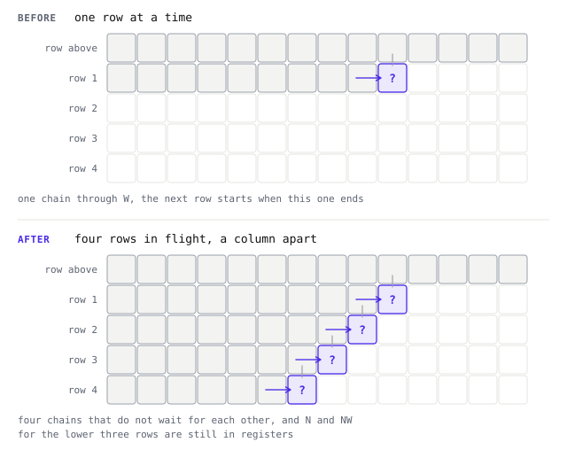

Inside the CPU decoder
- SSE2, AVX2 and NEON kernels with a plain C fallback, picked once at run time. Sources in
core/src.
Reading a tile runs the decoder of every codec in its graph, so the decoders set the read speed. This page shows how the CPU decoders of planar, med and PFOR use vector instructions to handle many values at once, and where a GPU differs.
One instruction, many values
A CPU core can process several numbers with one instruction. A vector register has lanes that add, shift or compare values together. This is called SIMD, single instruction, multiple data. ARM chips, including Apple chips, use NEON with 128-bit registers. x86 uses SSE2, 128 bits on every 64-bit chip, and AVX2, 256 bits on most recent chips.

GeoZL carries kernels for NEON, SSE2 and AVX2. At run time, GeoZL chooses the widest supported kernel once. Builds without SIMD use plain C. All paths write the same bytes, so frames decode identically across machines.
What a decoder needs to use it
SIMD only helps when the lanes can work without talking to each other. SIMD needs the same operation on neighbouring values, adjacent memory and no branch per value. A row dependency makes value i wait for i − 1. A CPU can pass one value between registers while it walks a row.
A GPU has different needs, since no thread can wait for a carry from another. Why they fit a GPU explains them. A codec can suit SIMD but not a GPU, or the reverse.

| SIMD on a CPU core | a GPU | |
| planar | a row at a time, by prefix sum | a sum down the columns, then along the rows |
| med, average | a chain through W, one sample after another | stays on the CPU |
| PFOR | shift, and, or on every lane | each thread jumps to slot × b |
| Huffman | one code after another | replaced by PivCo bitmaps |
Planar, a row at a time
Planar predicts every sample as W + N − NW. Decoding x = W + N − NW + r appears serial because each pixel needs W. Move W to the other side and it becomes x[i] − x[i−1] = r[i] + N[i] − N[i−1]. The right side uses the residual and the already decoded row above. Compute it across the row with vector math, then take a prefix sum to reconstruct the row.

delta_w is the same prefix sum without the row above, delta_n needs no prefix sum at all, and wp_static reads only finished rows, so it closes the row the same way as planar.
A prefix sum inside a register
A prefix sum appears serial because each lane needs the previous one. Inside a register, it is parallel. We shift the register by one lane and add, then by two, then by four. After three steps every lane holds the sum of all the lanes up to it. The figure uses eight 16-bit samples in one 128-bit register.

The only thing that crosses from one register to the next is the carry, the running total so far. The carry does not become the bottleneck. The shifts and adds inside a register do not need the carry, so the CPU can start them early. Only the final carry add waits, once per register of 8 or 16 lanes. Wider registers mean fewer carries per row, at the cost of one more shift and add step inside each.
When the guess needs W
Planar uses a sum, so W cancels when rearranged. med takes a median of W, N and the planar guess, and average takes the mean of W and N. Neither cancels. Each sample needs its reconstructed left neighbour, which no prefix sum can supply.
Both decoders still do some work in parallel. med keeps four rows in flight, each one column behind the row above. Each row remains serial, but four independent chains keep the core busy. The median itself is computed with masks instead of branches, because a three-way choice is exactly the branch a CPU guesses wrong.

med decodes more slowly than planar. Start with planar when decode speed matters.
PFOR, one stream per lane
Bit packing also has a lane dependency. Sequential 3-bit values cross byte boundaries at different offsets. Each needs a shift, and SIMD lanes need shuffling before unpacking. GeoZL PFOR follows TurboPFor and stores blocks vertically. Each lane of a 16-byte group is its own bit stream, so one load brings in the same slot of every lane, at the same bits.

Each lane uses the same shift and mask, which suits SIMD. The layout is part of the format, 16 bytes on every machine, so the same frame is fast on NEON, SSE2 and AVX2. How PFOR works covers the format itself.
From a register to a GPU
Planar and PFOR also decode on a GPU, med and Huffman do not. Why they fit a GPU explains what a GPU needs and how GeoZL meets it.